Importing models
Bring a 3D model file — a .glb from Blender or an .obj exported from Roblox Studio — into your Godot project, tune how it's imported, and drop it into a scene.

res://tutorial/guide/imported_models.tscn: the addon's round_tree.glb and the textured, rigged fox.glb, both imported and instanced.What you'll learn
- The key idea: in Godot a model is a file in your project folder that Godot re-imports whenever it changes.
- Which file formats work (glTF/GLB recommended, OBJ for Roblox exports) and which need extra setup.
- The FileSystem dock, the Import dock and the Advanced Import Settings window — every option.
- Six walkthroughs: import a GLB, fix the size with Root Scale, Roblox Studio → OBJ → Godot, export round-trip, edit a material, convert to a builder mesh.
- Troubleshooting: wrong size, missing textures, dark faces, wrong up-axis.
A few Godot words first
- Node
- One object in a scene, like an Instance in Roblox. A
MeshInstance3Dnode draws one mesh. - Scene /
.tscn - A saved tree of nodes. An imported model also becomes a little scene you can place many times — like a Roblox Model in the Toolbox.
- Instance (verb)
- Placing a copy of a scene inside another scene. Edits to the source flow into every copy — like a Roblox Package.
res://- "The project folder on disk".
res://models/tree.glbis the filemodels/tree.glbinside your project. - Dock
- A panel docked at the edge of the editor: Scene, Import, FileSystem, Inspector…
- Inspector
- The right-hand panel listing the selected node's properties — Roblox's Properties.
- Resource / material
- A reusable data file. A
StandardMaterial3Dis a material resource: colour, roughness, textures.
New to the editor itself? Start with Godot for Roblox builders; every term is also in the glossary.
The big idea: models are files Godot watches
In Roblox Studio a mesh lives inside your place file. You bring it in with the Toolbox or "Import 3D", and after that it's just data in the game.
In Godot a model is a file that stays on disk in your project folder (res://…/thing.glb). Godot watches that file and, whenever it changes, re-imports it: it reads the file and bakes a Godot scene (meshes, materials, skeleton, animations) into a hidden cache (.godot/imported/). You never edit the cache. You change the import settings or the source file, and Godot rebuilds. A small text file — thing.glb.import — sits next to every model and stores your settings, so they travel with the project.
There's no in-app Toolbox here. Your "toolbox" is the FileSystem dock — a view of the project folder. Drop a file into the folder and it shows up there, already imported. Tuning happens in the Import dock, which Studio doesn't really have.
Supported formats
| Format | Imports as | Works here? | Notes |
|---|---|---|---|
glTF .gltf / .glb | Scene | ✅ Yes — recommended | The addon's own models are .glb. Meshes, materials, textures, skeleton and animations. Full Import dock + Advanced window. |
OBJ .obj | "OBJ as Mesh" (a Mesh resource) | ✅ Yes | A different importer: Generate Tangents / LODs / Shadow / Lightmap UV2, Scale Mesh, Offset Mesh. Reads a .mtl beside it for colours. Dragging it in makes a MeshInstance3D. You can switch Import As to "OBJ as Scene". This is the Roblox export format. |
FBX .fbx | Scene (via converter) | ⚠️ Only if configured | Godot shows a "Configure FBX Importer" dialog: FBX needs the external FBX2glTF tool set in Editor → Editor Settings → FBX. Until then FBX won't import — prefer glTF/OBJ. |
Blender .blend | Scene | ⚠️ Only if Blender is installed | Needs Editor Settings → FileSystem → Import → Blender → Enabled plus the path to Blender. Not set up by default. |
Collada .dae, STL, PLY | Scene / Mesh | ✅ / ➖ | .dae imports as a Scene. The addon can export STL/PLY, but importing them is niche. |
In Studio, select your model and use Export Selection → .obj. Drop the .obj and its .mtl into res://models/ and it imports as a mesh (Walkthrough C). For rigs, animation or PBR materials, convert to glTF first.
The FileSystem dock — where files live
Bottom-left of the editor. Everything under res:// is your project. The addon ships real models under res://addons/MarchingSquaresTerrain/assets/: characters/fox/fox.glb, courtyard/ (round_tree.glb, stone_ring.glb, fountain.glb, pillar.glb) and about 40 rocks/stone_*.glb boulders.
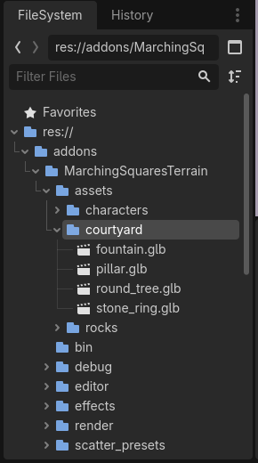
Right-click menus:
- On a folder: Create New ▸ Folder… / Scene… / Script…
- On a file: Rename, Move, Duplicate, Delete, Open in External Program, Copy Path, Show in FileSystem.
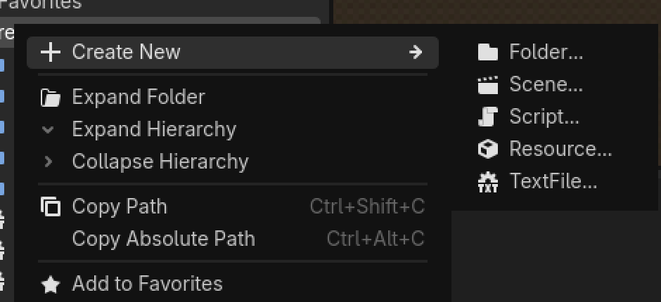
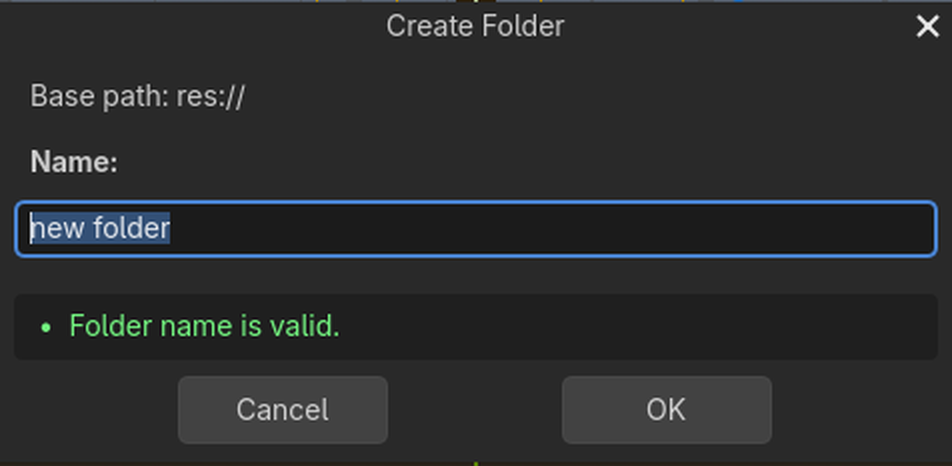
The Import dock
Click a model file once in FileSystem, then click the Import tab at the top-left, next to Scene. The dock fills with every setting Godot uses to bake that file. For a glTF/GLB, Import As is Scene.
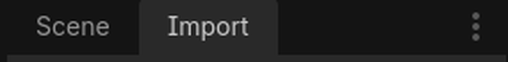
You never edit the baked result directly. Change a setting here (or edit the source file), press Reimport, and Godot rebuilds — every instance in every scene updates.
The dock is one tall scrolling list. Tour it top to bottom:
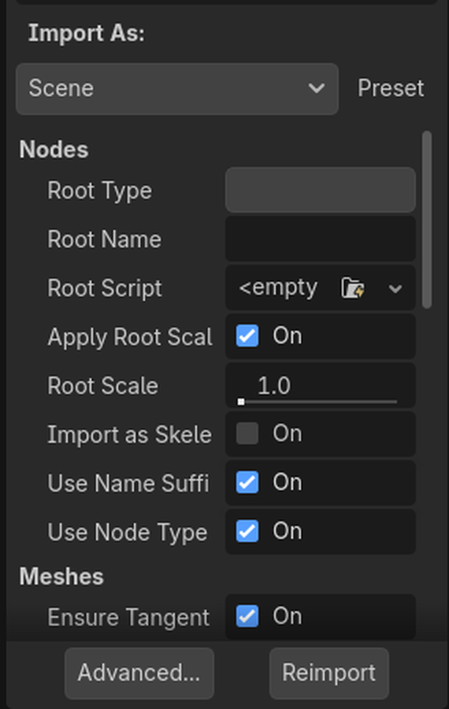
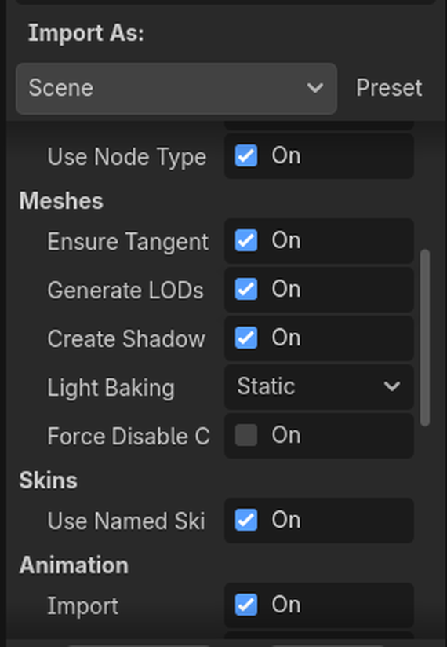
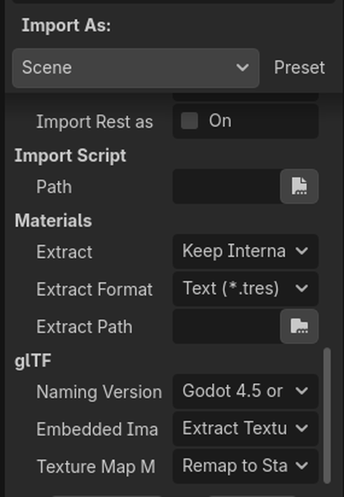
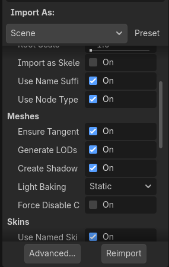
In a narrow editor window the dock truncates labels ("Apply Root Scal", "Import as Skele"…). The Advanced Import Settings window shows the same options with full labels.
Import option reference
Import As
What Godot turns the file into. glTF/GLB/DAE → Scene; OBJ → OBJ as Mesh (can switch to OBJ as Scene). The Preset button saves/loads option sets.
Root Type
The node at the top of the imported scene.
- Default
- empty = Node3D
Root Name
Name of the top node.
- Default
- empty = file name
Root Script
Attach a script to the root on import (advanced).
- Default
- <empty>
Apply Root Scale
Multiply the whole model by Root Scale on import.
- Default
- On
Root Scale
A uniform scale baked into the model. The fix for "my model is huge / tiny" — every instance gets the right size (Walkthrough B).
- Default
- 1.0
Import as Skeleton
Force the root to be a Skeleton3D (rigged imports).
- Default
- Off
Use Name Suffixes
Honour suffixes like -col, -noimp, -rigid on mesh names (e.g. auto-collision).
- Default
- On
Use Node Types
Let glTF node extensions pick the Godot node type.
- Default
- On
Ensure Tangents
Generate tangents (needed for normal maps).
- Default
- On
Generate LODs
Build lower-detail versions used at a distance (automatic performance).
- Default
- On
Create Shadow Meshes
A cheaper mesh used only for casting shadows.
- Default
- On
Light Baking
How the mesh takes part in baked lightmaps.
- Values
- Disabled, Static, Static Lightmaps, Dynamic
- Default
- Static
Force Disable Compression
Turn off mesh compression (compatibility).
- Default
- Off
Use Named Skins
Keep skin names for rigged meshes.
- Default
- On
Animation: Import · FPS · Trimming · Remove Immutable Tracks · Import Rest as RESET
Whether and how animations are baked. Do nothing for a static prop; they matter for a rigged character like the fox.
- Defaults
- Import On · FPS 30 · Trimming Off · Remove Immutable Tracks On · Import Rest as RESET Off
Import Script › Path
A .gd script that post-processes the imported scene. Advanced; usually empty.
Materials › Extract
Keep Internal = materials live inside the imported scene. Extract writes each material as its own file you can edit.
- Default
- Keep Internal
Materials › Extract Format
File type when extracting.
- Values
- Text (*.tres), Binary (*.res)
- Default
- Text (*.tres)
Materials › Extract Path
Folder for extracted materials.
- Default
- empty
glTF › Naming Version
Node-naming scheme, for compatibility with older projects.
- Default
- Godot 4.5 or later
glTF › Embedded Image Handling
Pull textures baked inside a .glb out into image files.
- Default
- Extract Textures
glTF › Texture Map Mode
How glTF texture maps map onto Godot's StandardMaterial3D.
- Default
- Remap to Standard
OBJ: Generate Tangents / LODs / Shadow / Lightmap UV2
The OBJ importer's mesh options — same ideas as the glTF Meshes section. Lightmap UV2 is off by default.
OBJ: Scale Mesh
x / y / z scale baked into the mesh — OBJ's equivalent of Root Scale.
- Default
- 1.0, 1.0, 1.0
OBJ: Offset Mesh
x / y / z offset baked into the mesh (move its pivot).
- Default
- 0, 0, 0
OBJ: Force Disable Mesh Compression
Turn off compression.
- Default
- Off
Advanced… / Reimport
Advanced… opens the Advanced Import Settings window. Reimport re-bakes the file with the current settings — press it after any change.
The Advanced Import Settings window
Press Advanced… in the Import dock, or double-click the model file in FileSystem. A big window opens, titled "Advanced Import Settings for Scene '<file>'".
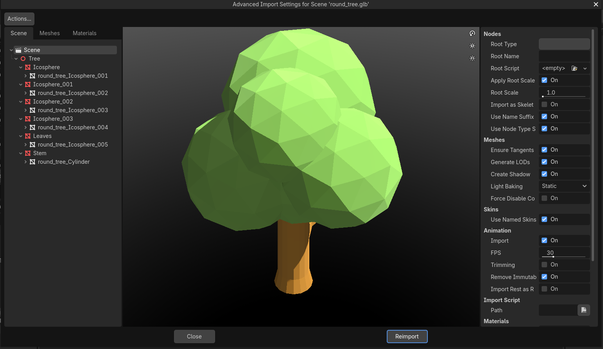
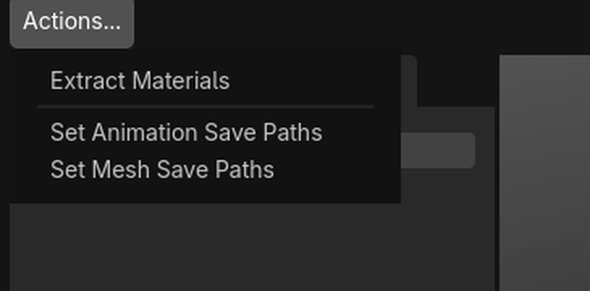
The three tabs
Select a node in the tree to see its per-node settings.
- A group node (e.g.
Tree): Node (Node Type, Script) and Import ▸ Skip Import (leave this node out). - A mesh node (e.g.
Icosphere): Import ▸ Skip Import; Generate ▸ Physics (checkbox), NavMesh, Occluder; and Mesh Instance (render Layers, Visibility Range, Cast Shadow). This is the per-mesh collision control.
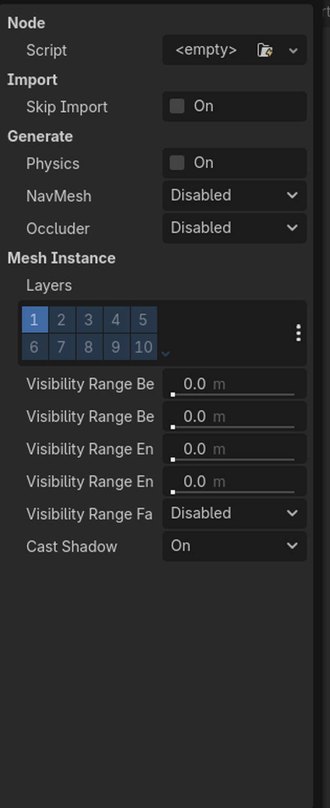
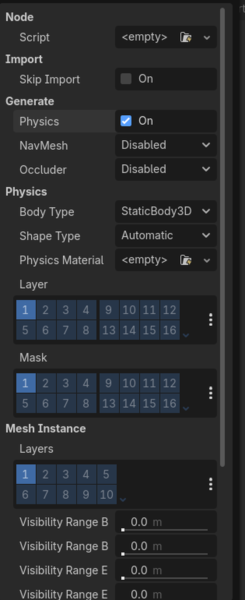
In Studio every Part collides unless you untick CanCollide. An imported Godot mesh has no collision until you turn on Generate ▸ Physics here. Shape Type plays the role of a MeshPart's CollisionFidelity: a simple Box or Convex hull is cheap, Trimesh follows the exact surface.
A flat list of every mesh. Select one for per-mesh settings.
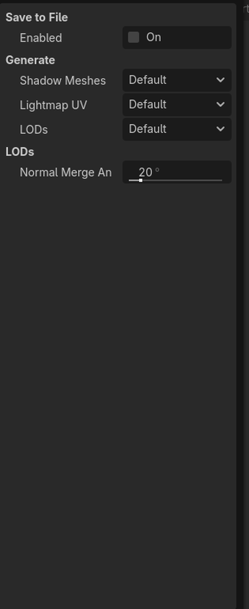
Lists the model's materials — for the tree, Leaves and Wood. Select one to preview it on a sphere and see Use External ▸ Enabled: turn it on to replace the baked-in material with your own .tres / .material file (a Path field appears).
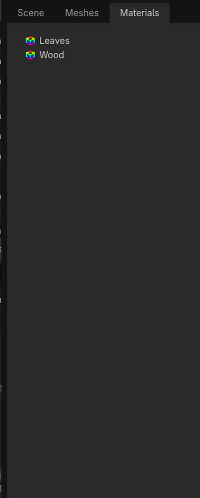
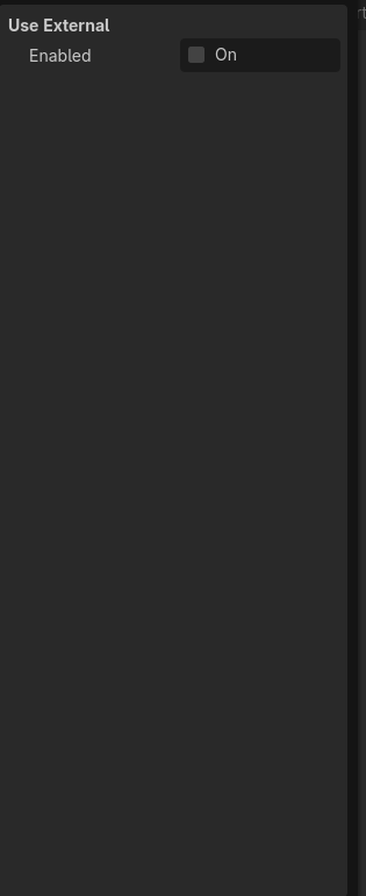
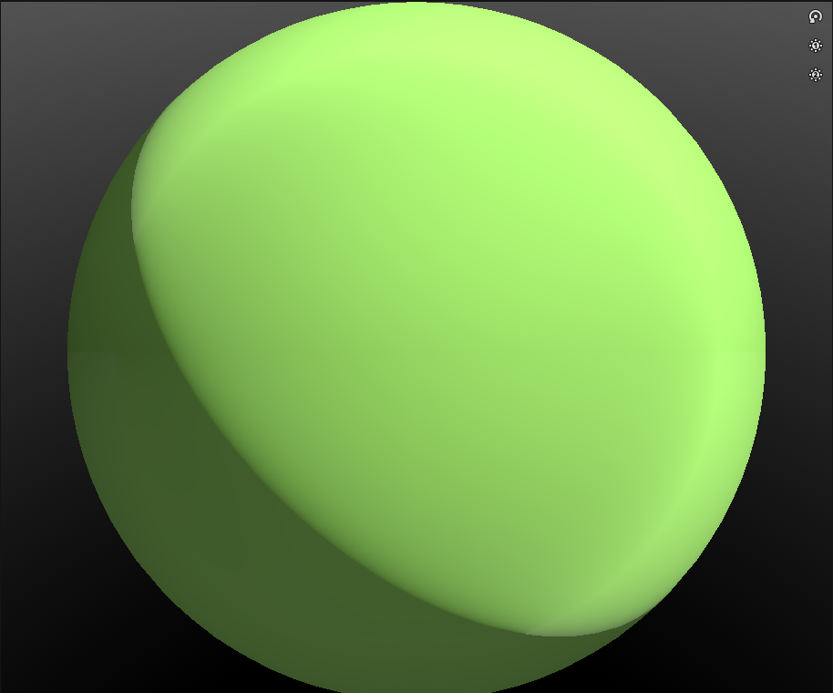
Skip Import
Leave this node (and its children) out of the imported scene.
Node Type / Script
Change what kind of node this becomes, or attach a script.
Generate ▸ Physics
Generate a collision body for this mesh. Reveals Body Type, Shape Type, Physics Material, Layer, Mask.
Body Type
StaticBody3D (doesn't move — walls, rocks), RigidBody3D (falls and tumbles), Area3D (a trigger zone), …
Shape Type
Automatic, Trimesh (exact, static only), Convex (wrapped hull), Box, Sphere, Capsule, …
Physics Material / Layer / Mask
Friction/bounce, which collision layers the body sits on, and which it collides with.
Generate ▸ NavMesh / Occluder
Generate navigation or occlusion data for the mesh.
- Default
- Disabled
Mesh Instance (Layers, Visibility Range, Cast Shadow)
Render layers, distance-based fade in/out, and whether it casts shadows.
Save to File ▸ Enabled
Write this mesh as its own .res/.tres file.
- Default
- Off
Generate ▸ Shadow Meshes / Lightmap UV / LODs
Per-mesh override of the dock-wide options.
- Values
- Default, Enabled, Disabled
LODs ▸ Normal Merge Angle
How aggressively LOD generation merges faces.
- Default
- 20°
Use External ▸ Enabled
Replace the baked-in material with an external .tres/.material; a Path field appears.
Actions… ▸ Extract Materials / Set Animation Save Paths / Set Mesh Save Paths
Bulk versions of the per-item save/extract options.
Close / Reimport
Close discards; Reimport applies and re-bakes.
Putting a model into a scene
An imported .glb becomes a scene you can drop into your own scene — like dragging a Model out of Roblox's Toolbox. Four ways:
- Drag from FileSystem into the 3D viewport — the model lands where you drop it, snapped onto the surface under the cursor.
- Drag from FileSystem onto a node in the Scene tree — it becomes a child of that node, at that node's origin.
- Scene dock ▸ Instantiate Child Scene… — the chain-link icon in the Scene dock toolbar.
- Double-click the file to open the imported scene (read-only), or Scene ▸ New Inherited Scene… to make an editable scene that inherits the model, so changes to the source still flow through.
round_tree.glb from FileSystem into the 3D view.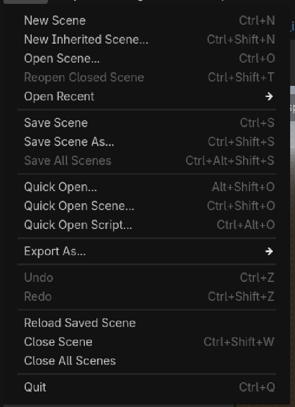
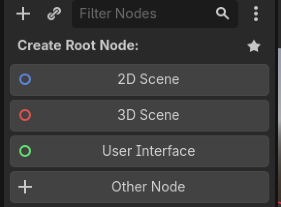
The instanced model appears as a node (e.g. round_tree) whose children are the actual MeshInstance3D parts (Tree ▸ Stem, Leaves, …).
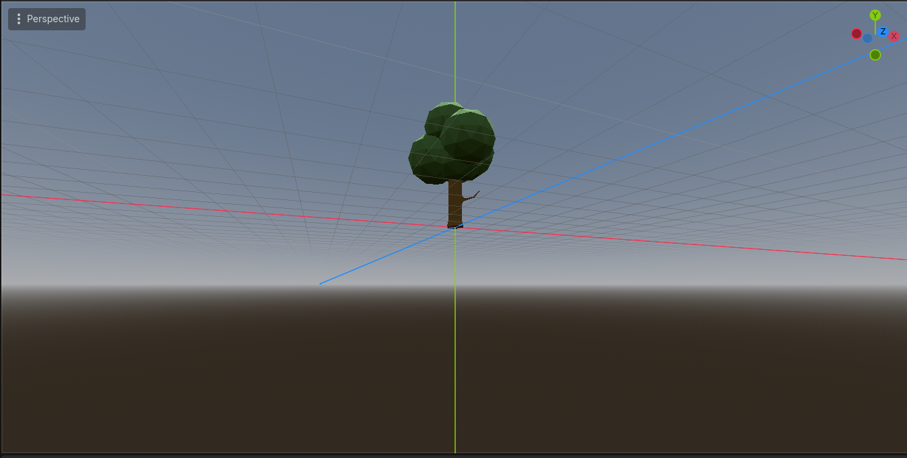
The addon's demo terrain scenes are built at a very large unit scale (hundreds of units across), so a real-size 3 m tree looks tiny there. That's scale, not a broken import. Fix it with Root Scale (bake a bigger size into the model) or by scaling the instance.
Moving, rotating and scaling an instance
An imported model is a normal Node3D, so the editor's transform tools apply — the same as Studio's Move / Rotate / Scale:
| Key | Tool | Notes |
|---|---|---|
| W | Move | Hover the 3D view first. Drag the coloured arrows. |
| E | Rotate | Drag the coloured rings. |
| R | Scale | Drag one axis handle, or a plane/centre handle to scale uniformly. |
| F | Focus | Frame the selected node; scroll to zoom. |
| Inspector | Transform | Type exact Position / Rotation / Scale — like Studio's Properties. |
| Magnet icons | Snapping | Toggle snap in the 3D toolbar. |
Walkthroughs
Follow along in your own project, or open the finished scene res://tutorial/guide/imported_models.tscn (a Node3D named ImportedModels with instanced round_tree and fox, using only addon assets).
A · Import a GLB and put it in a scene (the core loop)
- Find the model. In FileSystem open
res://addons/MarchingSquaresTerrain/assets/courtyard/— you'll seeround_tree.glband friends. (For your own files, drag a.glbfrom your file manager onto this dock, or copy it into the project folder — see C.) - Check the import settings. Click
round_tree.glbonce, then the Import tab next to Scene. Leave the defaults for now. - Peek inside (optional). Double-click the file (or press Advanced…). Orbit the preview, then Close.
- Instance it. Switch to a 3D scene and drag
round_tree.glbinto the viewport. Around_treenode appears. - Frame it. Select the node, hover the 3D view and press F. Scroll to zoom.
- Scale / move it. Press R and drag a handle, or type values in Inspector ▸ Transform.
B · Change an import setting and Reimport (fix the size)
- Select
round_tree.glb→ Import tab. - Double-click Root Scale, type
2.0, press Enter. - Click Reimport. Godot rebuilds the model and every instance in every scene doubles in size.
- Set it back to
1.0and Reimport to undo.
Fix "wrong size" with Root Scale (or Scale Mesh for OBJ), not by scaling every copy — then every future instance is right too.
C · From Roblox Studio to Godot (the OBJ path)
- Export from Studio. Select your model and use Export Selection → save an
.obj(Studio writes a.mtlbeside it). - Make a models folder. In FileSystem right-click
res://→ Create New ▸ Folder…, name itmodels, OK. - Copy the files in. Put the
.objand its.mtlinto the project'smodels/folder. Godot detects and imports them; the.objshows a mesh icon.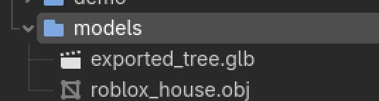
res://models/with an importedroblox_house.obj(mesh icon) andexported_tree.glb(scene icon). - Read its import settings. Select the
.obj→ Import tab. It says OBJ as Mesh, with Scale/Offset Mesh.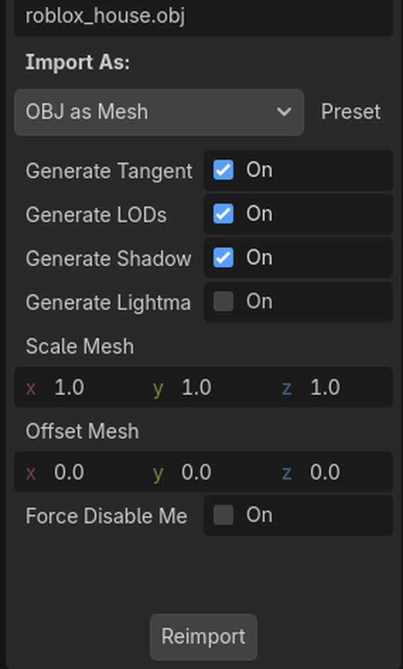
- Instance it. Drag the
.objinto the viewport — aMeshInstance3D(hereRobloxHouse) appears.
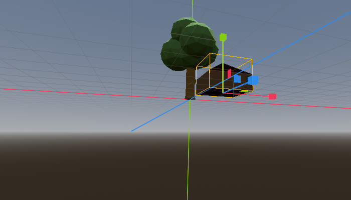
The Output panel may say "OBJ: Ambient light for material 'Walls' is ignored in PBR". That's the .mtl's ambient (Ka) colour being dropped — Godot uses the diffuse (Kd) colour. Expected, not an error.
D · Export from Godot and re-import (round-trip)
- Open or make a scene with a model (e.g. the tree).
- Scene ▸ Export As… ▸ glTF 2.0 Scene…, choose
res://models/exported_tree.glb. - An Export Settings dialog appears (Copyright, Bake FPS, Image Format, Root Node Mode). Click OK. The
.glbis written and auto-imported.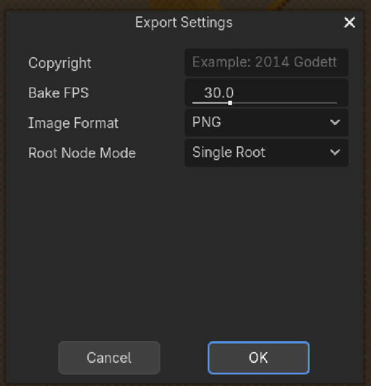
The Export Settings dialog for a glTF export. - Drag it from
res://models/back into a scene — a full export → import round-trip.
exported_tree.glb.The addon's Builder can likewise export a .glb / .obj / .stl / .ply of a mesh you model — re-import it the same way (see Modelling). The terrain itself can be exported as a GLB too (Chunks, settings & saving).
E · Edit an imported model's material
- Select one mesh part of an instance, e.g.
round_tree/Tree/Leaves. - In the Inspector expand Surface Material Override and set slot 0 to New StandardMaterial3D.
- Click the material to open its properties: Albedo, Metallic, Roughness, Emission, Normal Map…
- Expand Albedo, click Color and pick a colour — that part recolours.
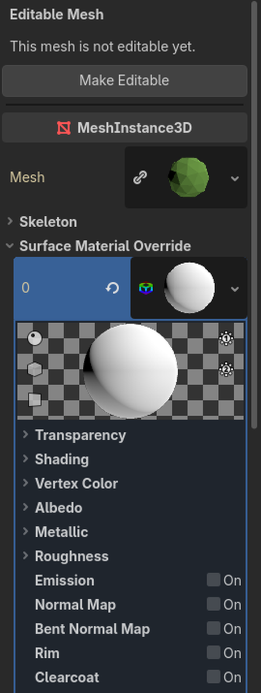
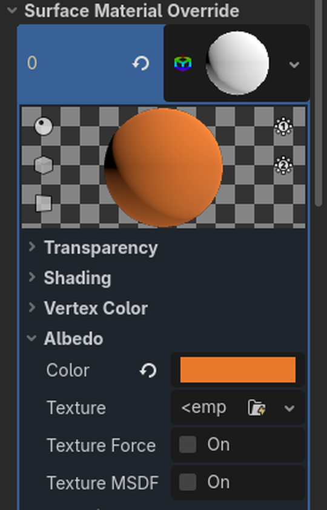
glTF models are split into several MeshInstance3D parts (the tree = Stem + several Icosphere canopy pieces + Leaves). An override recolours one part. To edit the model's own baked material, use Materials ▸ Extract in the Import dock or Use External in the Advanced window's Materials tab, then edit the extracted .tres. Or recolour after converting with the Builder (F).
Studio's Color and Material properties map to StandardMaterial3D: Albedo = Color, plus Metallic, Roughness and texture slots — same idea, edited in the Inspector.
F · Convert an imported mesh into an editable Builder mesh
- Select an imported
MeshInstance3D(e.g. the OBJRobloxHouse). The Pixel Builder tools appear (a tool column on the left of the 3D view and an option strip along the bottom), and the bottom strip says "Mesh / CSG selected: Convert makes it an editable builder mesh; the shape tool draws new ones". - Click the Convert button in the Builder's left tool column (hover the icons to read their tooltips), or use Inspector ▸ Make Editable. The Convert to builder mesh dialog opens.
- Choose options and click Convert. The mesh becomes an editable
PixelBuilderMeshyou can extrude, inset and bevel (see Modelling).
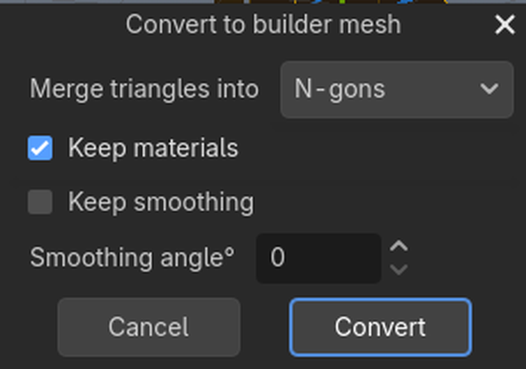
A Studio MeshPart is locked once imported. Here you can turn an import into an editable builder mesh and keep modelling it — something Studio can't do.
A textured, rigged model: the fox
fox.glb shows the pattern for textured models: the image files sit right next to the model.
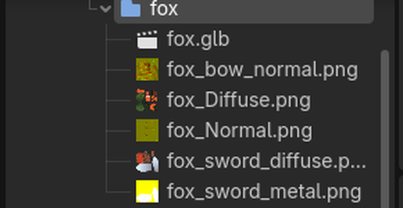
fox.glb with its textures beside it.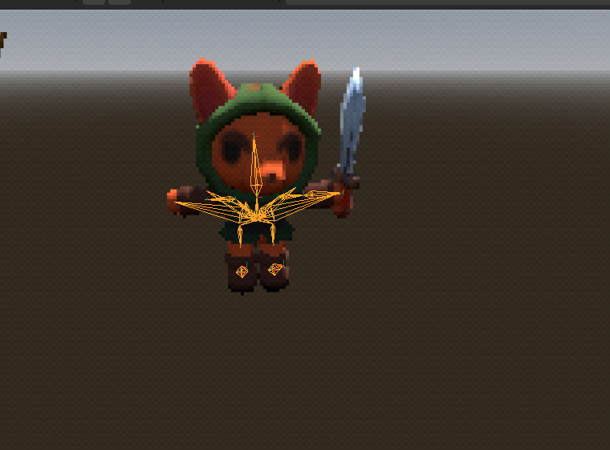
Troubleshooting
Model too big / too small
Use Root Scale (glTF) or Scale Mesh (OBJ), then Reimport (B). The addon's terrain demos use very large world units, so a real-size model looks tiny there — scale the model or the instance up.
Missing textures / looks untextured or white
Textures must sit next to the model file (glTF can also embed them). If you move a .glb without its textures, the colour goes flat/white. For OBJ, keep the .mtl beside the .obj.
Renders dark / faces look inside-out
Faces with reversed winding/normals shade black. Re-export from the source app with consistent normals, or Convert (F) and use Flip normals / Conform normals in the Builder.
Lies on its side (wrong up-axis)
glTF is Y-up; models from Z-up tools can arrive rotated. Rotate the instance −90° on X, or set a Root Type and rotate on import. Many exporters have a "Y-up" option — prefer that.
FBX won't import
FBX needs FBX2glTF configured in Editor → Editor Settings → FBX. Easier: export glTF from your 3D app.
.blend won't import
Enable FileSystem → Import → Blender and set the Blender path, or export glTF from Blender.
Imported prop has no collision
Select the mesh node in the Scene tab, tick Generate ▸ Physics, pick Body / Shape Type, Reimport.
Recolour changed only part of the model
glTF models are several mesh parts; an override hits one. See E.
"Ambient light … ignored in PBR" warning
Harmless: the OBJ's .mtl ambient colour is dropped.
Roblox → Godot cheat sheet
| Roblox Studio | Godot |
|---|---|
| Toolbox / Import 3D | Put the file in the project folder; manage it in FileSystem; tune it in the Import dock. |
| Export Selection → .obj | Drop .obj + .mtl into res://models/; imports as a mesh. |
| MeshPart | An imported scene you instance — and can convert to an editable builder mesh. |
| Properties → Color / Material | StandardMaterial3D: Albedo, Metallic, Roughness, textures. |
| Move / Scale / Rotate | W / R / E gizmos, or exact Transform values in the Inspector; bake a size with Root Scale. |
| CanCollide / CollisionFidelity | Advanced window ▸ Generate ▸ Physics, Shape Type. |
Check yourself
You imported a tree and every copy is twice too big. What's the cleanest fix?
Select the file → Import dock → set Root Scale to 0.5 → Reimport. Every instance updates.
Your Roblox OBJ imported, but it's untextured grey. What did you probably forget?
The .mtl file (and any textures) must sit beside the .obj in the project folder.
Why does the Import dock look different for an .obj than a .glb?
OBJ imports as a Mesh ("OBJ as Mesh": Scale / Offset Mesh), glTF as a Scene (Nodes, Meshes, Materials, glTF sections, plus Advanced…).
How do you make an imported rock solid so the player can't walk through it?
Open the Advanced window, select the mesh node in the Scene tab, tick Generate ▸ Physics (StaticBody3D), then Reimport.
Related pages
- Using models: tiles, foliage & props — next: put your imported models to work as foliage, props and tiles.
- Modelling: faces, edges & vertices — edit a converted builder mesh; export from the Builder.
- Greyboxing with the Roblox UI.
- Chunks, settings & saving — export the terrain itself as a GLB.
- Godot for Roblox builders — the editor basics.
- Playtesting & exporting.
- Troubleshooting & FAQ.